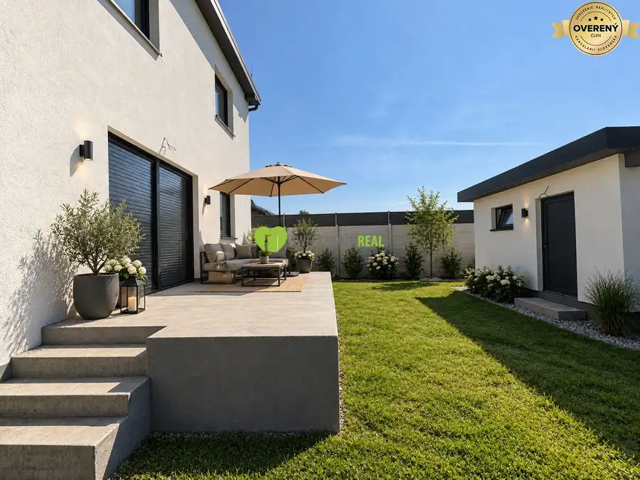
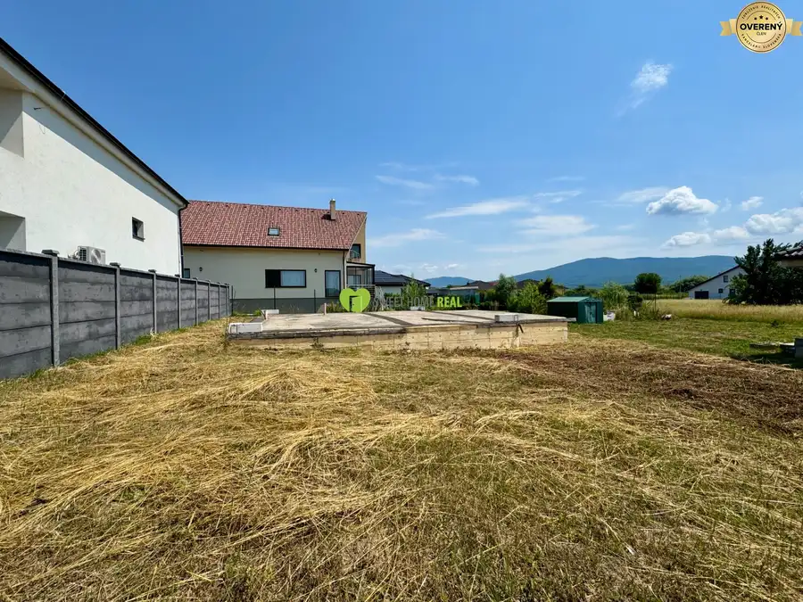
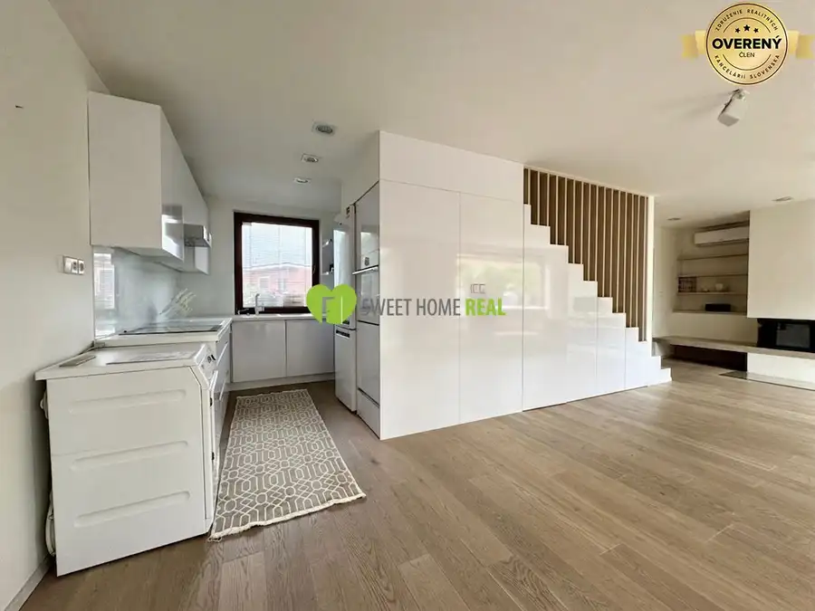
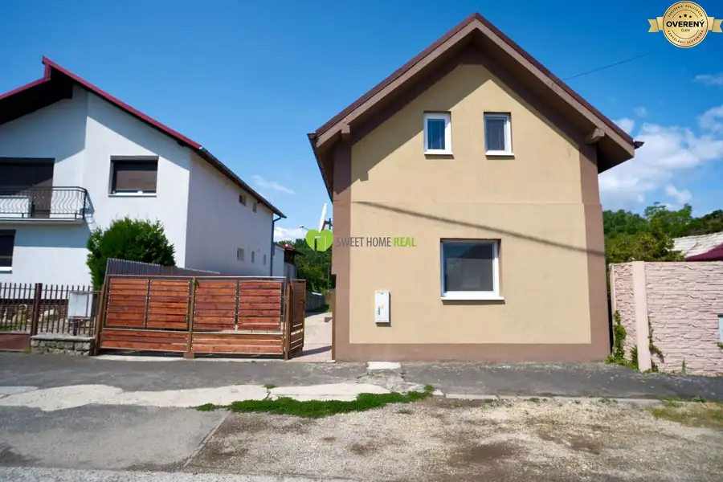
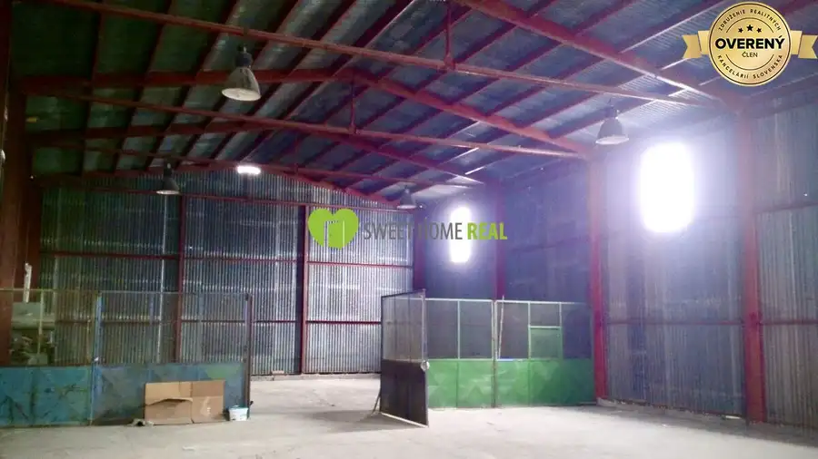
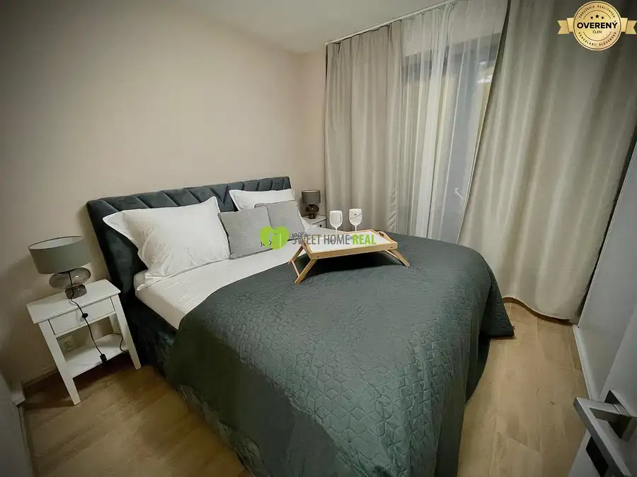
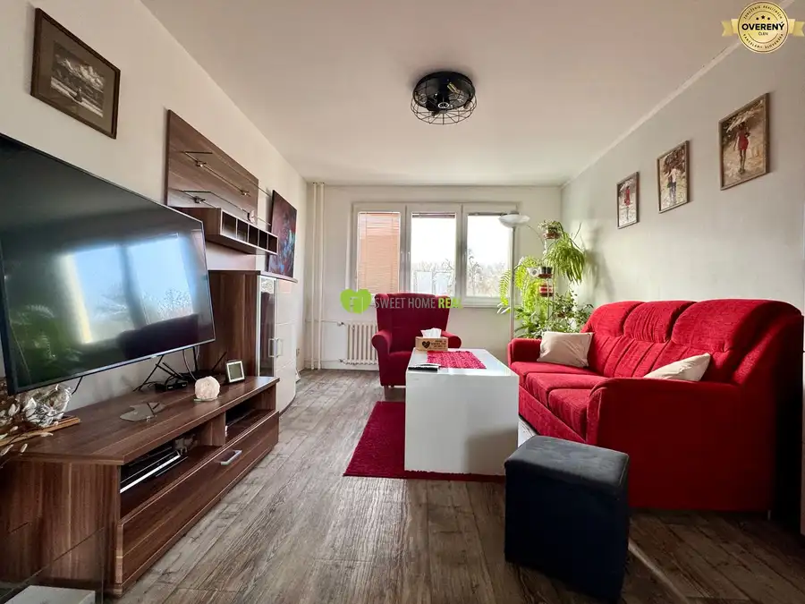
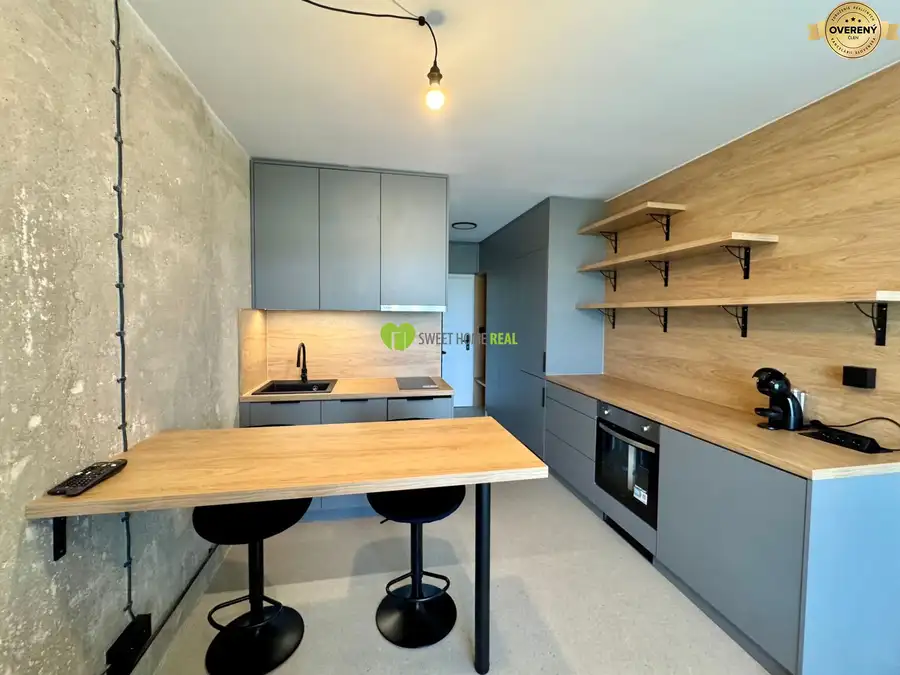
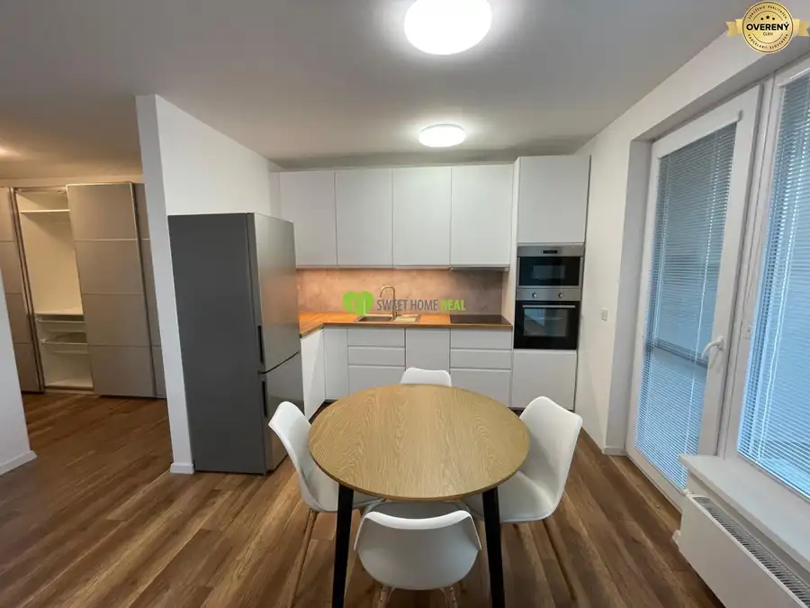

Aktuálna ponuka
9 nehnuteľností, predovšetkým byty, rodinné domy, pozemky. Každá má vlastnú stránku s fotkami, popisom a mapou.
Prezrieť ponukuMartina LabancováRealitná maklérka
Realitná maklérka · Sweet Home real s.r.o.
Predaj a prenájom nehnuteľností · Košice, Čaňa, Okolie




Rodinné domy10 243 000 €Na predaj 5i rodinný dom s veľkým pozemkom v tichej lokalite Trebišov Trebišov 162 m² Predstavte si rána s kávou na terase, deti hrajúce sa na veľkej záhrade a pokojné večery pri praskajúcom krbe. Presne takýto život vám ponúka tento…
Nebytové priestory3 Cena dohodouNa prenájom 3 skladové haly v priemyselnej zóne - Jarmočná 2, Košice mestská časť Juh, Košice 923 m² Ponúkame na prenájom tri samostatne stojace skladové haly v uzavretom a stráženom areáli na ulici Jarmočná 2, Košice. Areál sa nachádza v…
Byt10 Cena dohodouPrémiový 2‑izbový byt v projekte Panoráma Košice – dostupný od júla mestská časť Vyšné Opátske, Košice 2-izbový72 m² Predstavte si rána, keď otvoríte dvere na terasu a privíta ťa ticho, zeleň a jemný vánok z predzáhradky, o ktorú sa staráme s láskou už niekoľko…
BytRezervované10 225 000 €2i byt s loggiou,kompletná rekonštrukcia Slobody Západ, Košice 2-izbový65 m²4. podlažie Ponúkame na predaj výnimočný, citlivo prerobený, veľkorysý 2-izbový na ulici Slobody (Košice - Západ). Byt ma výmeru 65 m² + loggia a nachádza sa na…
BytPredané10 PredanéNa prenájom 2i luxusný zariadený byt na Terase mestská časť Západ, Košice 2-izbový44 m²6. podlažie Ponúkame na prenájom 2-izbový byt po kompletnej, veľmi štýlovej a modernej rekonštrukcii. Byt sa nachádza na 6. poschodí v kompletne zrekonštruovanom…
BytPredané7 PredanéNa prenájom: Štýlový 2‑izbový byt v projekte Nová Terasa mestská časť Západ, Košice 2-izbový52 m²3. podlažie Na prenájom: Priestranný a zariadený 2‑izbový byt s balkónom – Inovecká ulica, Košice Ponúkame na dlhodobý prenájom komfortný a moderne zariadený…Tomuto výberu zatiaľ nezodpovedá žiadna ponuka. Napíšte mi, čo hľadáte.
Volám sa Mgr. Martina Labancová. Som realitná maklérka kancelárie Sweet Home real s.r.o. a pôsobím predovšetkým v lokalitách Košice, Čaňa, Okolie a Trebišov (Košický kraj).
9 nehnuteľností, predovšetkým byty, rodinné domy, pozemky. Každá má vlastnú stránku s fotkami, popisom a mapou.
Prezrieť ponukuKošice, Čaňa, Okolie, Trebišov a okolie. Ponuku si môžete prezrieť podľa lokality.
Nehnuteľnosti v lokaliteOdhad trhovej ceny, príprava prezentácie, obhliadky, zmluvy a odovzdanie nehnuteľnosti.
Dohodnúť stretnutieNa čo sa pýtate najčastejšie, skôr než sa stretneme.
Odhad trhovej ceny vychádza z aktuálnych ponúk a predajov v lokalite, nie z cenníkových tabuliek. Podmienky Vám poviem pri prvom telefonáte.
Najprv obhliadka a odhad ceny, potom príprava prezentácie (fotografie, popis, inzercia), obhliadky so záujemcami, rezervačná zmluva, kúpna zmluva, návrh na vklad do katastra a odovzdanie nehnuteľnosti. O každom kroku viete vopred.
Najrýchlejšie cez WhatsApp alebo telefón. Termín stretnutia alebo obhliadky dohodneme podľa Vás.